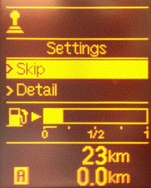
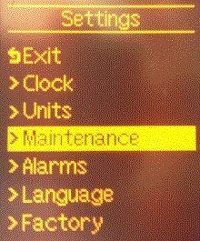
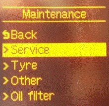

Turning off service light
This instruction describes how to manually turn off the service light.
Preconditions for the test:
Ensure all the doors are closed.
Ignition on, engine off.
Procedure:
On the combination instrument there are two buttons, use the left one.
Press in the left button until "DETAILS" is shown on the screen.

TURN the left button until "MAINTENANCE" is shown on the screen.
PRESS the button to select.

SERVICE "OIL CHANGE" "FILTER CHANGE" "OTHER" (pollen filter, etc.), are shown on the display.
TURN the button to select, PRESS the button to confirm selection.

Select "RESET" to reset the service indicator and "SETTINGS" to change miles for next service.
Turn off the ignition.
The function is done.